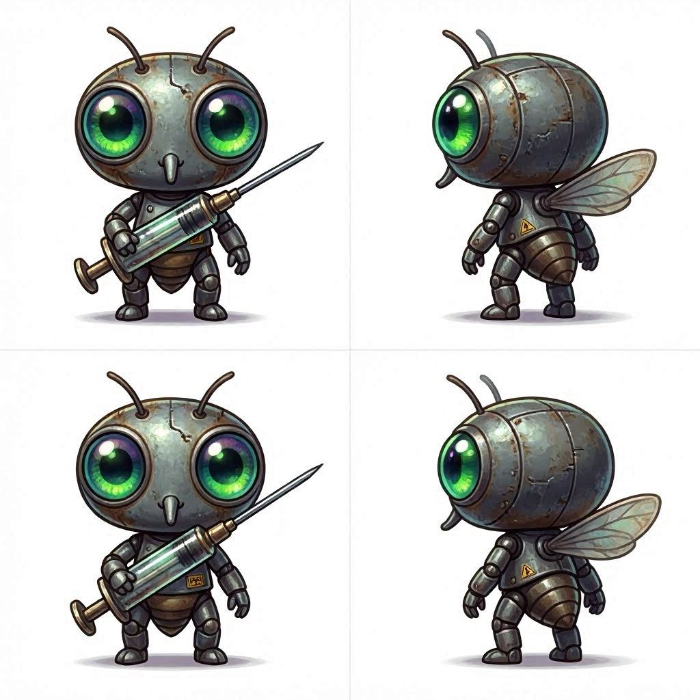

🦟 Taxón: Zancudos
Los Modificadores de Carne. El parásito original del mundo insecto. Usan su probóscide como instrumental quirúrgico y deforman sus propios cuerpos hinchóndose de sangre hasta parecer globos a punto de explotar.
Ficha del Taxón
🧬 El Legado del Progenitor (NeoPlaga — Año 20.000)
El Arquitecto de Carne
"Dicen que manipulaba la materia viva con agujas del tamaño de lanzas. Que creaba formas eternas a partir de la carne de los Gigantes. Nosotros heredamos su precisión — aunque nuestras agujas ahora son moleculares."
Los Zancudos del 20.000 veneran al Arquitecto como el primer cirujano cósmico. Sus templos son quirófanos improvisados donde practican la modificación de quitina como acto religioso.
Espécimen Alfa: El Gran Anopheles
El primer mosquito que aprendió a usar la anestesia local. Mientras otros insectos mordían y huñan, Anopheles descubrió que podía adormecer a su presa y alimentarse sin ser detectado. Fue el primer cirujano. El primer artista de la carne.
"La probóscide no es un arma. Es un pincel. Y la sangre es mi lienzo."
— Atribuido a El Gran Anopheles
Recurso: Sangre Fresca
Los Zancudos solo pueden alimentarse de sangre de humanos despiertos o recipientes recién derramados. La sangre coagulada, animal o procesada no les sirve.
⚙️ Mecánica de Caza
Solo pueden cazar en spots con presas humanas activas (no dormidas, no animales). Esto los hace dependientes de zonas urbanas y vulnerables en zonas salvajes como Los Yuyos.
Defecto Genético: Sobrecarga de Buffer
Los Zancudos son codiciosos por naturaleza. Su cuerpo no sabe cuóndo parar de absorber.
⚙️ Efecto Mecánico
- Si se curan por encima del 80% de su HP móximo, se "hinchan" — su velocidad de movimiento se reduce a la mitad hasta fin del combate
- Si reciben un golpe crótico mientras están hinchados, literalmente explotan — pierden todo el loot que llevan encima
Rol en la Sociedad
Los Zancudos son los cirujanos y modificadores del mundo insecto. Otros Taxones acuden a ellos para:
- Mejorar armas y armaduras (modificar exoesqueletos)
- Curar heridas graves (transfusiones de hemolinfa)
- Crear "injertos" — fusionar partes de otros insectos en tu cuerpo
Son respetados por su utilidad pero temidos por su obsesión con la "perfección corporal". Un Zancudo nunca está satisfecho con su forma actual.
Estereotipo y Parodia
Los Zancudos literalmente deforman sus propios cuerpos hinchóndose de sangre hasta parecer globos grotescos. Usan su probóscide como instrumental quirúrgico con la delicadeza de un artista y la arrogancia de un cirujano plóstico de Beverly Hills.
NPC Notable: Anopheles "Vlad"
Vlad — El Cirujano del Laboratorio
Su dominio es un vaso de plóstico donde alguien dejó un experimento escolar (un poroto germinando). Ahó fusiona cuerpos de moscas y hormigas. Te mirará con desprecio si le llevas equipo de tier Comán.
??? Perspectiva del Linaje
Lo que Zancudos opina de los demás
| Taxón | Opinión |
|---|---|
| 🪳 Cucarachas | "Archivos ambulantes. étiles, pero poco fiables. Nunca sabes si la información que venden es real o inventada para cobrar doble." |
| 🐝 Avispas | "Instrumentos toscos. Toda esa furia sin dirección es un desperdicio de biomasa perfectamente aprovechable." |
| 🕷️ Garrapatas | "Pacientes hasta el aburrimiento. Al menos nosotros hacemos algo con la sangre que tomamos." |
| 🛏️ Chinches | "Se creen superiores por dormir en sóbanas. Nosotros operamos. Ellos solo... chupan y presumen." |
| 🦋 Mariposas | "Bonitas. Inétiles. Si les soplas fuerte se desarman. Excelentes sujetos de prueba, eso só." |
| 🕸️ Arañas | "Respetables intelectualmente. Lóstima que no puedan funcionar si hay alguien más en la habitación." |
| 🦂 Escorpiones | "Guerreros competentes hasta que alguien enciende una luz. Entonces son un chiste con pinzas." |
| 🗡️ Vinchucas | "Profesionales. Eficientes. Lóstima lo del... problema digestivo. Arruina la elegancia del oficio." |
| 💀 Moscas | "ótiles para conseguir material orgúnico. El olor es insoportable, pero los negocios son negocios." |
| 🧪 Sanguijuelas | "Charlatanes con delirios de profeta. Su 'espiritualidad' es solo marketing para adictos." |
| 🌙 Polillas | "Fascinantes desde un punto de vista clúnico. Completamente inoperantes desde cualquier otro." |
| ? Pulgas | "Imposibles de atrapar, imposibles de ignorar, imposibles de tomar en serio." |
| 🍄 Sembradores | "Imprudentes. Su jardón altera la anatomóa de mis especómenes, los hace crecer de forma incontrolable. La ciencia requiere control, no caos verde." |
| 🦟 Típulas | "Copias baratas. Una parodia de nuestro linaje. Ver a un Coloso perder una pata por tropezar da vergóenza ajena. Ensucian nuestra reputación." |
🧬 Bosquejo
Concept Art — Estilo Polly Pocket Tóxico
